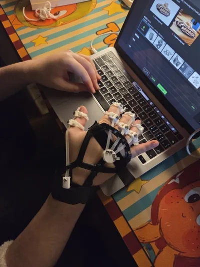
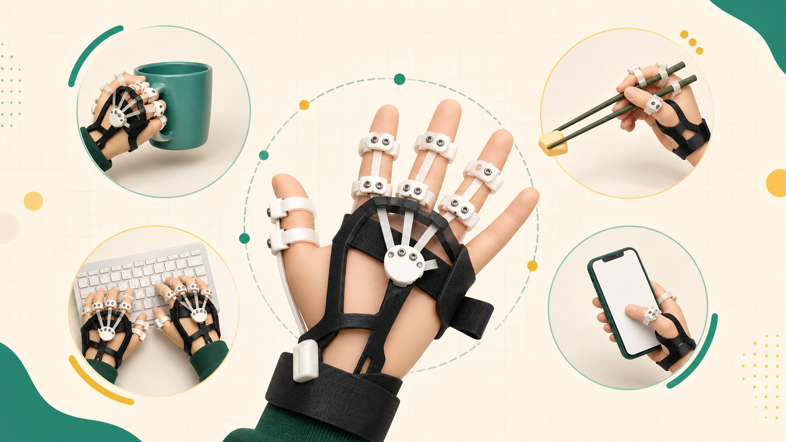
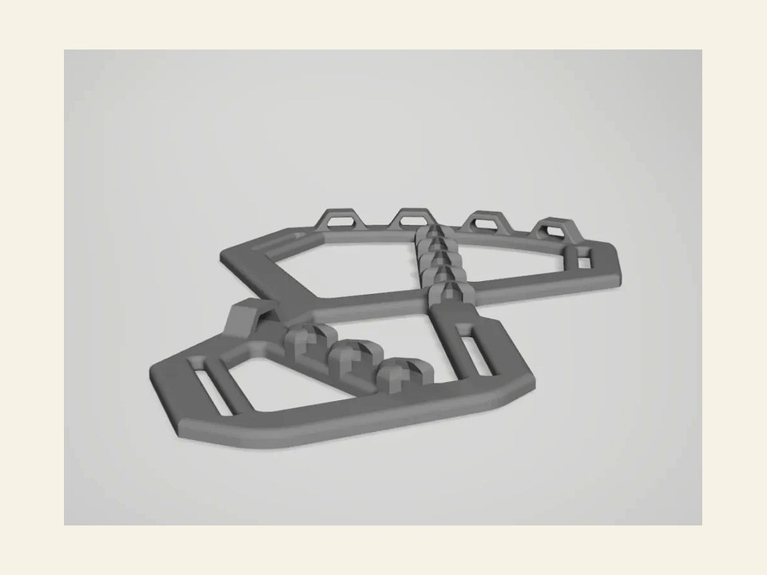

先把一个动作说清楚
记录想改善的动作、哪里疼、哪里滑、哪里不好戴。越具体，越能帮助判断该改哪里。

为什么要开源共建
手型、力量、病程和日常动作差异很大，很难靠一个固定版本解决所有问题。 OpenHandAid 把模型、材料清单、装配方法和反馈模板公开出来： 病友说清楚哪个动作卡住，打印志愿者复现可试戴样件，开发者再根据压痛、滑动、尺寸和佩戴流程的问题改下一版。
记录想改善的动作、哪里疼、哪里滑、哪里不好戴。越具体，越能帮助判断该改哪里。
记录材料、打印参数、尺寸偏差和装配问题，让别人也能少走弯路。
结构、材料、测量规则、文档和安全提醒，都可以被持续改进。
它不是一次性发布的产品，而是一条持续回流的开源辅具迭代线。
火种接力
最早是病友把“手张不开”的日常困难讲出来，Khub 把需求带进开源社区， ideaLab 和孙大卫老师团队做出第一代可试戴原型。现在，南京医科大学周宇轩老师团队继续接力， 让下一版更好戴、更舒服。
Khub 开始收集病友真实需求，把“手张不开”拆成能被设计和测试的具体动作。
ideaLab 和孙大卫老师团队完成多轮原型验证，把想法推进到可以试戴、可以修改的版本。
模型和项目介绍公开，更多病友家庭、打印志愿者和开发者可以看到、复现和反馈。
南京医科大学周宇轩老师团队接力下一轮迭代，继续看舒适度、佩戴流程和结构适配。
贡献者名单
（这里补充团队 logo、公开署名顺序和是否使用全名）
艾力：项目发起、病友需求收集、理念方向设计和资源链接。
兔子：运营协调、病友测试招募、反馈汇总。
K仔：项目推文与传播。
孙大卫老师团队：第一代原型探索、制作推进和多轮迭代协调。
陈嘉琪、蒲新仪：具体设计、制作与测试。
庄表伟：开源治理指导。
李大维：开源实践与社区发展建议。
张淼：创业设计与产品策划支持。
周舟：协助病友家庭佩戴和测试。
病友家庭反馈会继续匿名展示，避免暴露姓名、头像和昵称。
南京医科大学生物医学工程与信息学院周宇轩老师团队：接力下一轮迭代。
（这里补充学生成员公开署名和各自负责方向）
这是什么？
当手指不容易自然张开时，很多日常动作会变得很费劲。 这套辅具尝试通过外部支撑和弹力辅助，让手指多留一点活动空间。
目前重点看轻量动作：撑开手掌、拿杯、拿筷子、打字、操作手机。 它不承诺恢复功能，只帮助使用者多一次尝试机会。
不同手型、病程和使用习惯差异很大。开源能让打印者、开发者和病友一起把结构、材料、尺寸和佩戴流程继续改下去。
我适合吗？
你可以先想一个最想改善的小动作。这个动作越具体，越容易判断当前版本是否值得试。

手指自然张开困难，抓握不稳，希望尝试拿杯、夹菜、打字等轻量动作的人。
能说清楚自己卡在哪个动作，并愿意反馈哪里舒服、哪里疼、哪里不好戴的人。
皮肤破损、明显疼痛、关节被强行牵拉，或医生明确不建议佩戴外部辅具时，应停止使用。
佩戴效果
怎么开始？
比如拿杯、拿筷子、撑开手掌、打字。先不要期待它解决所有手部问题。
观察压痛、勒痕、滑动、麻木和皮肤状态。哪里不舒服，就记录哪里。
下一版要改结构、材料、尺寸还是佩戴流程，应该由真实体验来决定。
参与共建
不需要每个人都懂建模。这个项目现在需要真实体验、稳定复现和可验证改动。
描述你最想改善的动作、试戴感受、疼痛或不舒服的位置。
提交一个动作反馈 打印 / 制作志愿者
打印 / 制作志愿者
测试材料、打印参数、装配步骤，把复现过程记录清楚。
查看模型和材料清单
开发 / 研究伙伴改进尺寸规则、佩戴流程、舒适度、说明文档和风险提示。
去 GitHub 参与改进